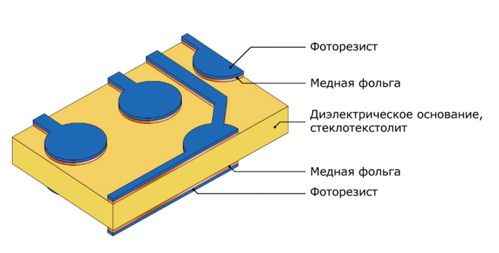
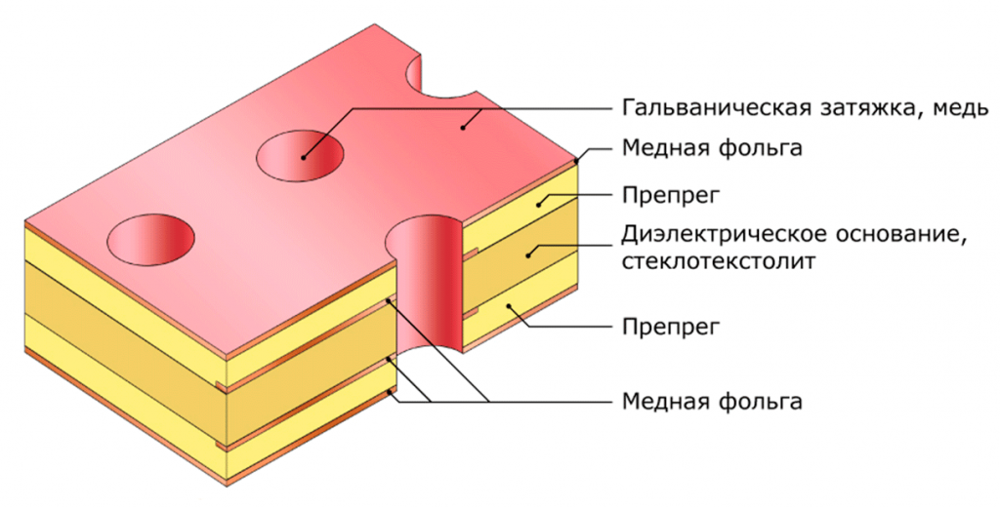
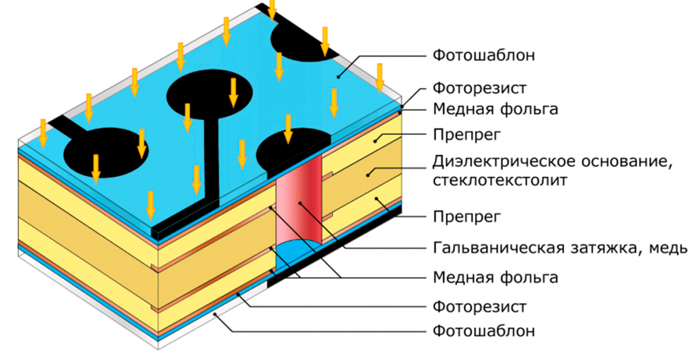
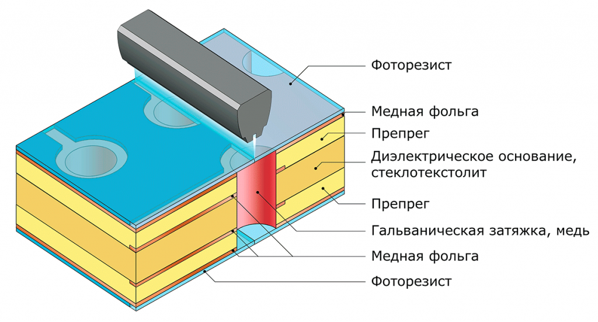

{kind=link}
{kind=link}
{kind=link}
{kind=link}
{kind=link}

Технология производства печатных плат
Многослойные печатные платы: сквозная металлизация
С технологическими особенностями и базовыми материалами многослойных печатных плат на производстве Резонит вы можете ознакомиться по ссылке.
Исходный материал
Исходный материал – диэлектрическое основание ламинированное с двух сторон медной фольгой
В качестве диэлектрика могут выступать: листы, изготовленные на основе стеклотканей, пропитанных связующим на основе эпоксидных смол — стеклотекстолит FR4, листы с керамическим наполнителем, армированные стекловолокном — Rogers 4000 series, листы фторопласта (PTFE) армированные—ArlonADseries. Наиболее распространенный ряд толщин медной фольги — 18, 35 мкм.
Нанесение фоторезиста. Внутренние слои
Следующий этап — нанесение на заготовку фоточувствительного материала (фоторезиста). Этот этап проходит в чистой комнате с неактиничным (желтым) освещением (фоторезист светочувствителен к ультрафиолетовому спектру). Фоторезист бывает пленочным (наносится на заготовку ламинированием) и жидким (наносится валиками).
Экспонирование фоторезиста. Внутренние слои
1 вариант: Экспонирование с негативными фотошаблонами
С заготовкой совмещается фотошаблон. Круг, часть которого изображена — контактная площадка. Изображение на фотошаблоне — негативное по отношению к будущей схеме.
Участки поверхности, прозрачные на фотошаблоне, засвечиваются, фотополимеризуются и теряют способность к растворению в установке проявления. После экспонирования фотошаблоны удаляются.
2 вариант: Прямое экспонирование фоторезиста
Экспонирование фоторезиста происходит на установках прямого лазерного экспонирования без использования фотошаблонов. Источником излучения при этом может быть UV лазер или UV светодиодная матрица.
Проявление фоторезиста. Внутренние слои
Изображение на фоторезисте проявляется: не засвеченные участки растворяются, засвеченные — остаются на плате. Назначение оставшегося фоторезиста — обеспечить защиту меди (будущих проводников) от травящего раствора.
Травление меди. Внутренние слои

На этом этапе фоторезист защищает медь от травления. Незащищенная медь растворяется в травящем растворе, оставляя на плате рисунок будущей схемы.Травление осуществляется в горизонтальной конвейерной машине.
Удаление фоторезиста
Фоторезист удаляется, обнажая базовую медную фольгу на проводниках. Таким образом, мы получили рисунок внутренних слоев МПП.Далее заготовки передаются на автоматическую оптическую инспекцию для проверки качества травления.
Оксидирование
На данном этапе верхний слой медной фольги специальном образом окисляется для лучшей адгезии при последующем прессовании.
Прессование
Для позиционирования внутренних слоёв между собой используется установка автоматической сборки пакетов. После сборки, «пакет» внутренних слоёв склеивается через препрег индукционным нагревом.
В пресс загружаются четыре пресс формы. Каждая может содержать до 6-ти заготовок. Заготовка расположена между двумя разделительными пластинами и представляет из себя набор, который в общем случае состоит из:
Собранные пресс-формы загружаются в вакуумный горячий пресс. В процессе прессования заготовки многослойных печатных плат склеиваются в единую структуру.
После горячего прессования платы перемещаются в холодный пресс для контролируемого охлаждения.
Далее пресс-формы разбираются и спрессованные заготовки передаются на операцию вскрытия базовых отверстий.
Сверление сквозных отверстий
На специализированных станках с ЧПУ в плате сверлятся отверстия. Это первая операция, влияющая на точность (класс) печатной платы. Точность сверления отверстий зависит от применяемого оборудования и инструмента. Значения позиционных допусков осей отверстий в диаметральном выражении (по ГОСТ Р 53429-2009) в миллиметрах:
|
Размер большей стороны ПП |
Позиционный допуск на расположение осей отверстий для класса точности | ||||||
|
1 |
2 |
3 |
4 |
5 |
6 |
7 | |
|
До 180 включительно |
0,20 |
0,15 |
0,08 |
0,05 |
0,05 |
0,03 |
0,03 |
|
Свыше 180 до 360 включительно |
0,25 |
0,20 |
0,10 |
0,08 |
0,08 |
0,05 |
0,05 |
|
Свыше 360 |
0,30 |
0,25 |
0,15 |
0,10 |
0,10 |
0,08 |
0,08 |
Химическое и предварительное гальваническое осаждение меди

Этот этап необходим для придания стенкам отверстий проводимости для последующей гальванической металлизации. Рыхлый слой химически осажденной меди быстро разрушается, поэтому его усиливают тонким слоем гальванической меди.
Прямая металлизация:
Для создания первоначального проводящего слоя на стенках отверстий применяется сочетание трех процессов: первая ступень — перманганатная очистка отверстий.
В процессе обработки стравливается небольшой слой эпоксидной смолы с торцов внутренних слоёв и стенок отверстий. Далее заготовки проходят линию прямой металлизации.
В процессе обработки на поверхности стеклотекстолита создаётся очень тонкий проводящий слой палладия.
Прямая металлизация с применением палладия обеспечивает наибольшую адгезию покрытия к стеклотекстолиту в сравнении с альтернативными процессами.
Поверх слоя палладия осаждается 5-микронный слой гальванической меди. Качество металлизации каждой заготовки контролируется оператором.
Нанесение фоторезиста. Внешние слои
Следующий этап — нанесение на заготовку фоточувствительного материала (фоторезиста). Этот этап проходит в чистой комнате с неактиничным (желтым) освещением (фоторезист светочувствителен к ультрафиолетовому спектру). Фоторезист бывает пленочным (наносится на заготовку ламинированием) и жидким (наносится валиками).
С заготовкой совмещается фотошаблон. Круг, часть которого изображена — контактная площадка. Изображение на фотошаблоне — негативное по отношению к будущей схеме.

Участки поверхности, прозрачные на фотошаблоне, засвечиваются, фотополимеризуются и теряют способность к растворению в установке проявления. После экспонирования фотошаблоны удаляются.

Экспонирование фоторезиста происходит на установках прямого лазерного экспонирования без использования фотошаблонов.
Установка прямого лазерного экспонирования распознает базовые отверстия при помощи оптических камер, проверяет их расположение и диаметр. Если заготовка соответствует критериям качества, фоторезист избирательно экспонируется ультрафиолетовым лазером. Сочетание автоматического выравнивания отпечатка и высокого разрешения печати позволяет экспонировать печатные платы 6 класса точности и выше.
Изображение на фоторезисте проявляется: не засвеченные участки растворяются в проявочном растворе, открывая отверстия и топологию для осаждения гальванической меди, засвеченные — остаются на плате. Назначение оставшегося фоторезиста — обеспечить избирательное осаждение меди.
Медь осаждается на поверхность стенок отверстий и все проводники. По ГОСТ 23752-79 толщина металлизации должна быть не менее: 20 мкм для ДПП, 25 мкм для МПП.
IPC-6012B устанавливает иные значения: Class 2- не менее 20 мкм для ДПП и МПП,Class 3- не менее 25 мкм для ДПП и МПП.
В связи с тем, что процесс осаждения меди идет параллельно в отверстиях и на поверхности проводников, получить толщину металлизации в отверстиях 30 мкм и более невозможно, применяя обычные фоторезисты.
Процесс покрытия контролируется компьютером для обеспечения требуемых параметров гальванических покрытий. После покрытия толщина осаждённой меди проверяется не разрушающим методом.
Гальваническим осаждением меди создается необходимый по толщине слой металла в отверстиях печатной платы.В качестве металлорезиста могут выступать различные металлы и соединения, имеющие меньшую скорость травления по сравнению с медью. Осаждается металлорезист на открытые от фоторезиста участки — на проводники и в отверстия.
После гальванического осаждения меди и защитного слоя олова заготовки передаются на травление. Перед травлением с заготовок снимается слой фоторезиста, обнажая базовый слой меди, который необходимо удалить. Топология печатной платы и металлизированные отверстия остаются под защитой гальванически осаждённого слоя олова.
Травление осуществляется в горизонтальной конвейерной машине. Медь, не защищённая оловом, стравливается. Таким образом формируется топология наружных слоёв печатной платы. Слой олова после травления снимается в установке для снятия.
Металлорезист удаляется с поверхности меди в специальном растворе. Это начало процесса, называемого SMOBC (SolderMaskoverBareCopper — маска поверх необработанной меди). В других процессах, например, если нанесение защитной маски не осуществляется, оловянно-свинцовая смесь оплавляется для дальнейшего использования (лужение).
Для защиты поверхности платы и медных участков, не подлежащих нанесению финишного покрытия, на плату наносится защитная паяльная маска. Наиболее широко распространена жидкая двухкомпонентная фоточувствительная паяльная маска.
Сухая пленочная паяльная маска обеспечивает хорошие результаты по тентированию переходных отверстий, наносится методом ламинирования, но в настоящее время используется редко, т.к. не подходит для печатных плат выше 3 класса точности. Жидкая паяльная маска наносится методом сеткографии через сетчатый трафарет, причем существует два варианта нанесения. Через готовый трафарет, когда в сетке уже сформированы все окна вскрытия, и маска наносится только на защищаемые участки печатной платы (такой вариант имеет невысокое разрешение и применяется, как правило, на односторонних печатных платах ниже 3 класса точности), и сплошное нанесение маски с использованием метода трафаретной печати и последующим экспонированием через фотошаблон или прямым экспонированием.Перед нанесением маски поверхность меди очищается, затем развивается необходимая шероховатость для хорошей адгезии маски.
Жидкая маска продавливается ракелем через сетку на всю поверхность заготовки. Нанесенный слой подсушивается в печке до образования сухой поверхности. Для печатных плат с маской с двух сторон процесс повторяется. Подсушенные заготовки передаются на экспонирование.

С заготовкой совмещается фотошаблон. Круг, часть которого изображена — контактная площадка. Изображение на фотошаблоне — негативное по отношению к будущей схеме. Участки поверхности, прозрачные на фотошаблоне, засвечиваются, фотополимеризуются и теряют способность к растворению в растворе проявления. После экспонирования фотошаблоны удаляются.
На установке прямого экспонирования маска засвечивается UVлазером или UVсветодиодной матрицей. Засвечиваемые участки полимеризуются и теряют способность к растворению в растворе проявления.
Незасвеченные участки маски смываются в линии проявления. Качество сформированных масочных слоев проверяется контролером. После контроля заготовки помещаются в печку для окончательной полимеризации.
Для идентификации монтируемых компонентов большинство изготавливаемых печатных плат имеют маркировку. Маркировка наносится после проявления маски.
Через сетчатый трафарет наносится маркировка контуров, позиционных номеров, типов и номиналов компонентов.
Для идентификации монтируемых компонентов большинство изготавливаемых печатных плат имеют маркировку. Маркировка наносится после проявления маски.
По аналогии с обычным струйным принтером изображение формируется капельками чернил отверждаемых ультрафиолетом.
Струйный метод является современным и эффективным способом нанесения маркировки.
Заготовки с напечатанной маркировкой передаются на контроль качества.
На открытые от маски участки меди различными методами наносится финишное покрытие для обеспечения качественной пайки.
HASL (Hot Air Solder Leveling). Нанесение припоя путем окунания заготовки в расплавленный припой с последующим выравнивание горячим воздухом. Возможно применение (в разных установках) свинцового и бессвинцового (leadfree) припоя.
На открытые от маски участки меди различными методами наносится финишное покрытие для обеспечения качественной пайки.
Нанесение иммерсионного золота по подслою никеля (процесс ENIG) осуществляется в многостадийном химическом процессе. IPC-4552 регламентирует толщину подслоя Ni 3-6 мкм, минимальную толщину Au 0,05 мкм (типовые значения 0,05-0,1 мкм).
{kind=link}
{kind=link}
{kind=link}
{kind=link}
{kind=link}
{kind=link}
{kind=link}
{kind=link}
{kind=link}
{kind=link}